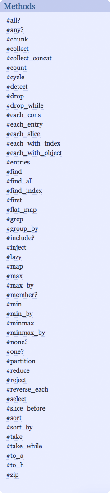

In the beginning of learning Ruby, we learn to deal with one thing at a time as simple as calculating 1 + 2. There are times that I wonder what if I’m given hundreds or thousands of simple calculations – that will be too much of tedious work. This is when enumerable comes handy. Enumerable methods are expert in handling multiple of items at a time. In this post I'm going to talk about a few Ruby Enumerables I've recently learned.
.partition
Ruby will return two arrays. The first array contains items that meet the condition, and the second array contains the rest of items. If no item meets the condition or all items meet the condition, ruby will still return two arrays and one of the arrays will be empty.Syntax
Array.partition { |item| condition} #=> [[items that meet the condition],[the rest of items]]
Ruby will iterate through each item with the given condition and place each item into different arrays by their result. Each result will be stored as a hash key pointing to corresponding items as hash values.
Ruby cycles through each item under condition n times. If argument is not given, it will result an infinite loop.
Syntax
Array.cycle(n) {|item| condition} #=> repeats the condition until n times
Examples
[1,2,3,4].cycle(2) { |n| puts n } #=> 1,2,3,4,1,2,3,4[1,2,3,4].cycle { |n| puts n } #=> 1,2,3,4,1,2,3,4,1,2,3… That’s about it for now. I look forward to share more learning experience with you.
